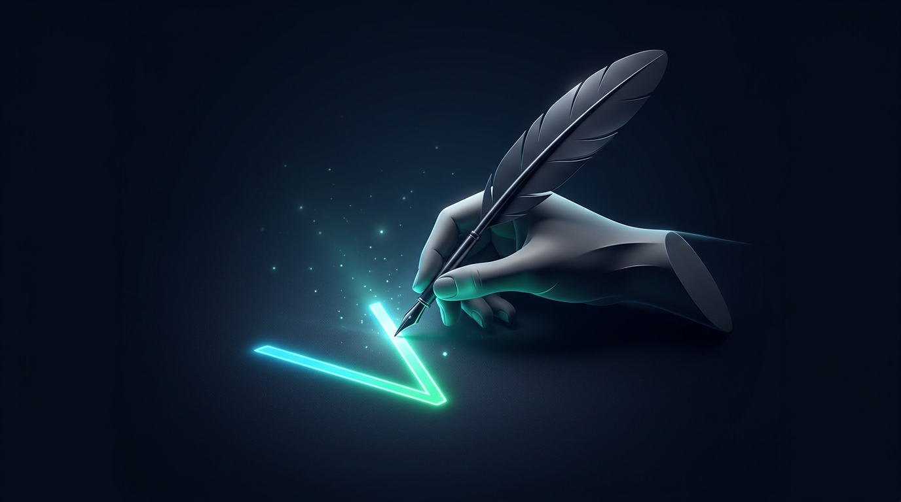
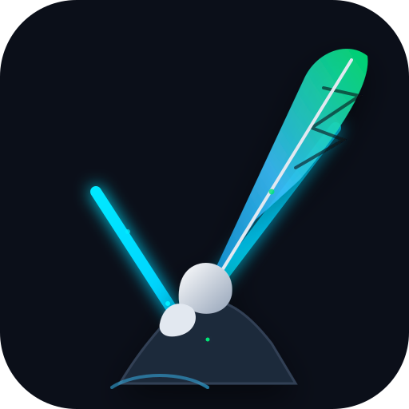
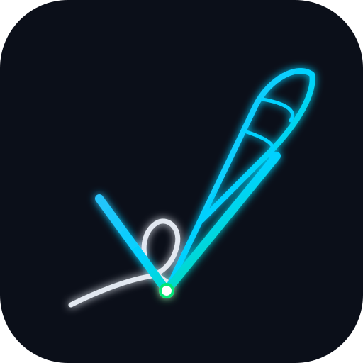
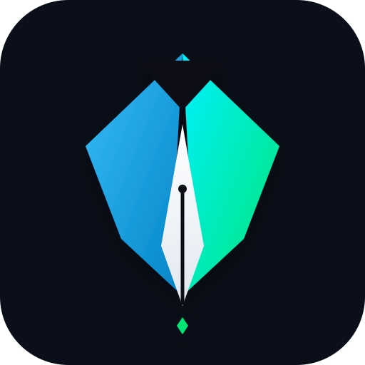
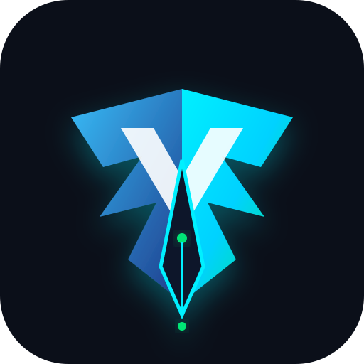

Conceito clássico-minimalista: A mão de Blaise Pascal escrevendo o 'V' reativo da Web contemporânea

Inspirado nos retratos clássicos do século XVII de Blaise Pascal e dos filósofos escrevendo com penas sobre pergaminho. Reimaginado em uma estética minimalista de ponta, onde a pena desenha um traço radiante em neon ciano e esmeralda, formando o "V" de BlaiseVue.

A mão estilizada segura a pena de escrita enquanto sua ponta desliza e projeta o grande 'V' em neon esmeralda e ciano sobre a tela escura.

Arte de linha pura e fluida. O contorno da mão e da pena se conecta em um único fluxo que culmina no vértice do 'V'.

A versão geométrica purificada da pena. Se preferir usar o instrumento de escrita como ícone compacto para a aba do navegador.

Asas da pena que se abrem no formato da letra 'V' com fenda luminosa no centro da pena de titânio.